CS184/284A Spring 2025 Homework 3 Write-Up
Link to webpage: cal-cs184-student.github.io/hw-webpages-asdfghjkl
Link to GitHub repository: cal-cs184-student/hw1-rasterizer-asdfghjkl
Overview
Give a high-level overview of what you implemented in this homework. Think about what you've built as a whole. Share your thoughts on what interesting things you've learned from completing the homework.Part 1: Ray Generation and Scene Intersection
How We Implemented Ray Generation and Primitive Intersection of Rendering Pipeline:
Ray Generation:
Task 1: Generating Camera Rays
Camera ray generation transforms normalized screen coordinates into world-space rays via the camera's virtual sensor plane. Given normalized image coordinates \((x, y) \in [0,1] \times [0,1]\), we first map them to the sensor plane at \(z = -1\) in camera space. The sensor spans from \(\left(-\tan\!\left(\frac{hFov}{2}\right), -\tan\!\left(\frac{vFov}{2}\right), -1\right)\) at the bottom-left to \(\left(\tan\!\left(\frac{hFov}{2}\right), \tan\!\left(\frac{vFov}{2}\right), -1\right)\) at the top-right. The mapping is:
\[ x_{cam} = (2x - 1)\tan\!\left(\frac{hFov}{2}\right), \quad y_{cam} = (2y - 1)\tan\!\left(\frac{vFov}{2}\right) \]A ray is then constructed from the camera origin \((0,0,0)\) through the sensor point \((x_{cam},\, y_{cam},\, -1)\). The direction is transformed to world space using the c2w rotation matrix and normalized. The ray origin in world space is set to pos, and min_t, max_t are initialized to nClip and fClip respectively.
Task 2: Generating Pixel Samples
To estimate the integral of radiance over each pixel, raytrace_pixel generates ns_aa camera rays per pixel and averages their radiance values. For each sample, a random offset \((dx, dy)\) is drawn from a uniform grid sampler and added to the pixel's bottom-left corner \((x, y)\), then divided by the image dimensions to produce normalized coordinates:
Each resulting ray is passed to est_radiance_global_illumination, and the results are averaged into the final pixel color. The sample count is written to sampleCountBuffer for use in adaptive sampling later.
After completing Tasks 1 and 2, rendering produces debug-colored images where RGB values encode the world-space ray direction at each pixel:
|
|

|
Primitive Intersection:
Task 3: Ray-Triangle Intersection
Triangle intersection uses the Möller–Trumbore algorithm, which solves for the ray parameter \(t\) and barycentric coordinates \((u, v)\) simultaneously without computing the plane equation. Given a triangle with vertices \(\mathbf{p_1}, \mathbf{p_2}, \mathbf{p_3}\) and a ray \(\mathbf{R}(t) = \mathbf{O} + t\mathbf{D}\):
- Compute edge vectors \(\mathbf{e_1} = \mathbf{p_2} - \mathbf{p_1}\) and \(\mathbf{e_2} = \mathbf{p_3} - \mathbf{p_1}\)
- Compute \(\mathbf{h} = \mathbf{D} \times \mathbf{e_2}\) and determinant \(a = \mathbf{e_1} \cdot \mathbf{h}\); if \(|a| < \varepsilon\), the ray is parallel — no intersection
- Compute \(\mathbf{s} = \mathbf{O} - \mathbf{p_1}\) and \(u = \frac{\mathbf{s} \cdot \mathbf{h}}{a}\); if \(u \notin [0,1]\), miss
- Compute \(\mathbf{q} = \mathbf{s} \times \mathbf{e_1}\) and \(v = \frac{\mathbf{D} \cdot \mathbf{q}}{a}\); if \(v < 0\) or \(u + v > 1\), miss
- Compute \(t = \frac{\mathbf{e_2} \cdot \mathbf{q}}{a}\); if \(t \notin [t_{min}, t_{max}]\), miss
On a valid hit, max_t is updated to \(t\) so that farther intersections are discarded. The surface normal is interpolated via barycentric coordinates \(w = 1 - u - v\):
After implementing Task 3, rendering sky/CBempty.dae produces normal-shaded geometry:

|
Task 4: Ray-Sphere Intersection
Sphere intersection is solved by substituting \(\mathbf{R}(t) = \mathbf{O} + t\mathbf{D}\) into \(|\mathbf{R}(t) - \mathbf{C}|^2 = r^2\), which yields the quadratic \(at^2 + bt + c = 0\) where:
\[ a = \mathbf{D} \cdot \mathbf{D}, \quad b = 2\mathbf{D} \cdot (\mathbf{O} - \mathbf{C}), \quad c = |\mathbf{O} - \mathbf{C}|^2 - r^2 \]If the discriminant \(\Delta = b^2 - 4ac < 0\), no intersection exists. Otherwise, both roots are computed:
\[ t_{1,2} = \frac{-b \pm \sqrt{\Delta}}{2a} \]The smaller root is preferred; if it falls outside \([t_{min}, t_{max}]\), the larger root is tried. The surface normal at the hit point is computed analytically as \(\mathbf{n} = \frac{\mathbf{R}(t) - \mathbf{C}}{r}\). The implementation is split across three functions: test() solves the quadratic and returns both \(t\) values, has_intersection() validates the range and updates max_t, and intersect() additionally populates the full Intersection struct.
Normal-shaded results for several small .dae files:

|

|

|
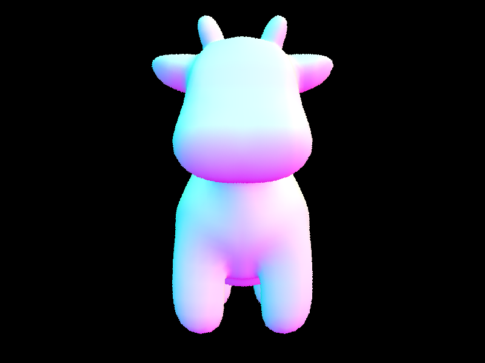 |
Part 2: Bounding Volume Hierarchy
Task 1: BVH Construction
The BVH is constructed recursively. At each call, we first compute the bounding box over all primitives in the current range and create a new node with that box. If the number of primitives is at most max_leaf_size, the node is made a leaf by setting its start and end iterators directly.
Otherwise, we choose a split axis and split point using the Surface Area Heuristic (SAH) with \(B = 12\) uniform buckets along the longest axis. For each primitive, we compute which bucket its centroid falls into and accumulate the bounding box and count for that bucket. We then evaluate \(B - 1\) candidate split planes, computing the SAH cost for each:
\[ \text{cost}(i) = |\text{left}_i| \cdot SA(\text{left}_i) + |\text{right}_i| \cdot SA(\text{right}_i) \]where \(SA(\cdot)\) is the surface area of the bounding box and \(|\cdot|\) is the primitive count on each side. The split with the lowest cost is chosen. Primitives are then partitioned using std::partition by which bucket side of the best split their centroid falls on. If the partition produces a degenerate split (all primitives on one side), the node is returned as a leaf to avoid infinite recursion. Left and right children are then constructed recursively.
Task 2: Bounding Box Intersection
The bounding box intersection uses the slab method: for each of the three axes, we compute the near and far \(t\) values where the ray intersects the two axis-aligned planes bounding the box on that axis. If \(t_{near} > t_{far}\) after accounting for direction sign, we swap them. We then take the maximum of all near values and minimum of all far values across axes. If the resulting interval \([t_0, t_1]\) is empty (i.e. \(t_0 > t_1\)), the ray misses the box.
Task 3: BVH Traversal
has_intersection short-circuits as soon as any primitive intersection is found, recursing into children in arbitrary order. intersect must find the nearest hit, so both subtrees may need to be visited. To reduce unnecessary traversal, we first test both children's bounding boxes and recurse into the nearer one first (by comparing entry \(t\) values). If a hit is found in the nearer child, we tighten max_t to i->t before recursing into the farther child, allowing early termination if its bounding box entry exceeds the current closest hit. Since each primitive's intersect correctly updates both i->t and ray.max_t, these propagate through the recursion without needing explicit management in the BVH traversal.
Normal Shading Results (BVH enabled):
|
|
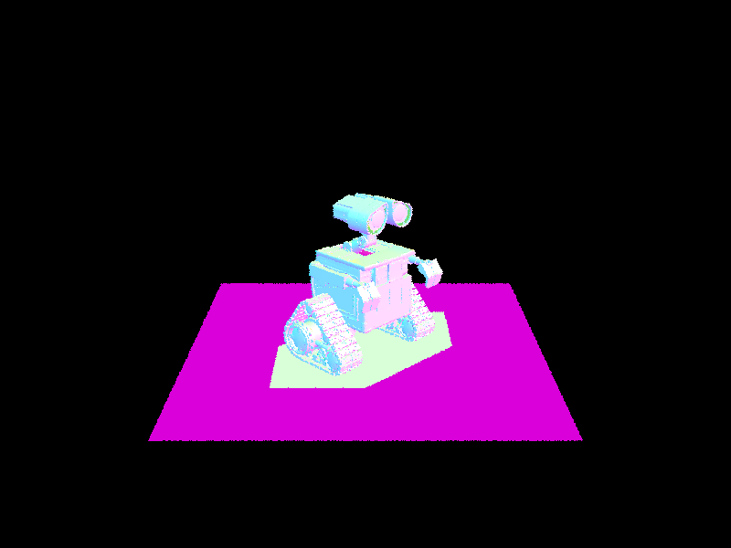 |

|

|
Rendering Time Comparison:
.png)
|
.png)
|
.png)
|
.png)
|
Without BVH acceleration, rendering cow.dae (5,856 triangles)
took 3,183 seconds and beetle.dae (7,558 triangles) took 2,627 seconds,
as every ray had to be tested against all primitives — averaging over 1,200 intersection tests per ray.
With BVH enabled, the same scenes rendered in 3.7 and 2.4 seconds respectively, with under 3 intersection tests per ray on average.
This represents a speedup of roughly 860× for cow and 1,090× for beetle. The dramatic reduction in intersection tests —
from \(O(n)\) to \(O(\log n)\) — comes directly from the SAH-based BVH construction, which produces well-balanced splits that allow large
portions of the scene to be culled early during traversal.
Part 3: Direct Illumination
Disclaimer: We unfortunately ran out of time for rendering.
Task 1: Diffuse BSDF
A diffuse (Lambertian) material reflects incoming light equally in all directions on the hemisphere. The BSDF value is constant and given by:
\[ f(\omega_i \to \omega_o) = \frac{\text{reflectance}}{\pi} \]where reflectance is the material's albedo as a per-channel RGB vector. The division by \(\pi\) ensures energy conservation — integrating the BSDF over the hemisphere weighted by \(\cos\theta\) gives back the reflectance.
Task 2: Zero-Bounce Illumination
Zero-bounce radiance is the light that reaches the camera directly from a light source without any intermediate bounces. The implementation simply returns the emission of the intersected surface via isect.bsdf->get_emission(). For most surfaces this is zero; for emissive surfaces (area lights) it returns the emitted spectrum.
Task 3: Direct Lighting with Uniform Hemisphere Sampling
Hemisphere sampling estimates direct illumination by uniformly sampling incoming directions over the hemisphere at the hit point, then checking whether each sampled ray hits a light source. The Monte Carlo estimator for outgoing radiance is:
\[ L_o(p, \omega_o) \approx \frac{1}{N} \sum_{i=1}^{N} \frac{f(\omega_i \to \omega_o) \cdot L_e(\omega_i) \cdot \cos\theta_i}{p(\omega_i)} \]where \(p(\omega_i) = \frac{1}{2\pi}\) for uniform hemisphere sampling. For each sample, a direction \(\omega_i\) is drawn from hemisphereSampler in object space, transformed to world space, and used to cast a shadow ray from hit_p with min_t = EPS_F to avoid self-intersection. If the ray intersects an emissive surface, its emission \(L_e\) is retrieved and the full reflectance equation term is accumulated. The result is divided by num_samples.
Task 4: Direct Lighting by Importance Sampling Lights
Instead of sampling uniformly in a hemisphere, importance sampling samples directions directly toward each light source. For each light in the scene, we draw ns_area_light samples (or just 1 for delta/point lights). For each sample, sample_L returns the emitted radiance \(L_i\), the world-space direction \(\omega_i\) toward the light, the distance to the light, and the sampling PDF. A shadow ray is cast from hit_p in direction \(\omega_i\) with max_t = distToLight - EPS_F — if any geometry occludes the path, the sample is skipped. Otherwise the contribution is accumulated as:
Samples where \(\cos\theta_i \leq 0\) (light behind the surface) are skipped. This approach converges much faster than hemisphere sampling because samples are never wasted on directions that miss all lights.
Rendered Results:
|
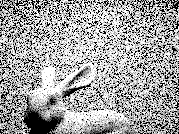 |
|
Noise Comparison: Light Rays (Importance Sampling, 1 sample/px)
|
|
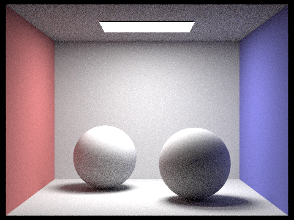 |
|
|
|
Analysis: Hemisphere vs. Importance Sampling:
Uniform hemisphere sampling produces significantly noisier results at the same sample count because most sampled directions miss the light source entirely, contributing zero radiance and wasting computation. Soft shadows and low-lit areas are especially grainy since the probability of a hemisphere sample hitting a small area light is low. Importance sampling eliminates this by always sampling toward lights, so every sample contributes meaningful radiance. The resulting images are much cleaner at equal sample counts, and soft shadow boundaries converge with far fewer light rays. The tradeoff is that importance sampling requires explicit knowledge of light positions, whereas hemisphere sampling is more general — though in practice, importance sampling is strictly preferable for scenes with localized light sources.
Part 4: Global Illumination
Disclaimer: We unfortunately ran out of time for rendering.
Task 1: Diffuse BSDF Sampling
DiffuseBSDF::sample_f samples an incoming direction using a cosine-weighted hemisphere sampler, which draws directions proportional to \(\cos\theta\) — naturally matching Lambert's cosine law. The sampler writes both the sampled direction \(\omega_i\) and its PDF into the provided pointers, and the function returns the BSDF value \(f(\omega_o \to \omega_i) = \frac{\rho}{\pi}\).
Task 2 & 3: Indirect Lighting with Russian Roulette
at_least_one_bounce_radiance implements recursive path tracing. At each call, it first computes the direct (one-bounce) illumination at the hit point. If isAccumBounces is true, this is added to the output; otherwise only the contribution at exactly the target bounce depth is returned. If the ray depth has reached 1, recursion stops.
For deeper bounces, Russian Roulette is used for unbiased termination: a continuation probability \(p_c = 0.65\) is used, and coin_flip(p_c) decides whether to trace further. If continuing, sample_f samples a new direction \(\omega_i\) in object space, which is transformed to world space and used to cast a new ray from the hit point (offset by EPS_F to avoid self-intersection). If this ray hits the scene, at_least_one_bounce_radiance is called recursively on the new intersection, and its contribution is accumulated as:
The division by \(p_c\) corrects for the bias introduced by random termination, keeping the estimator unbiased.
Global Illumination Results (1024 samples/px):
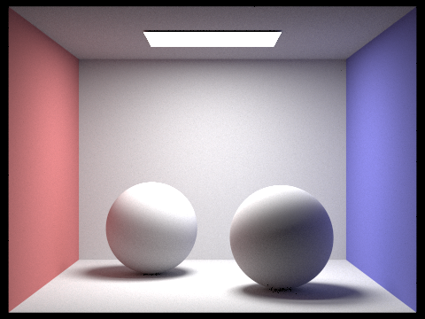
Direct vs. Indirect Illumination Only:
|
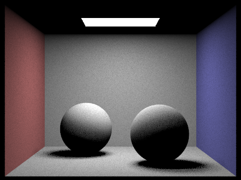 |
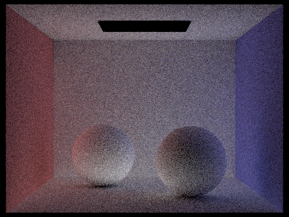 |
Unaccumulated Bounces: CBspheres_lambertian.dae (isAccumBounces=false):
|
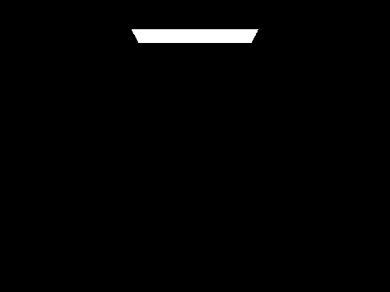 |
|
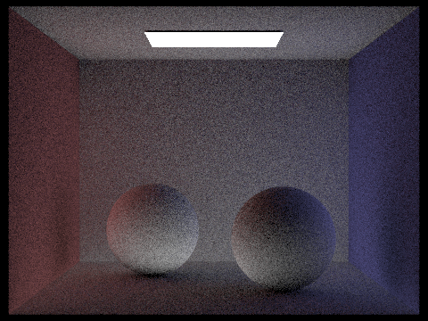 |
|
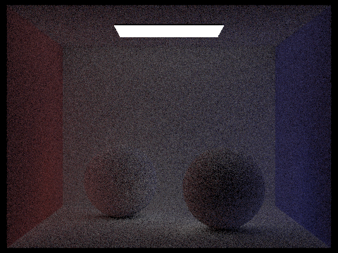 |
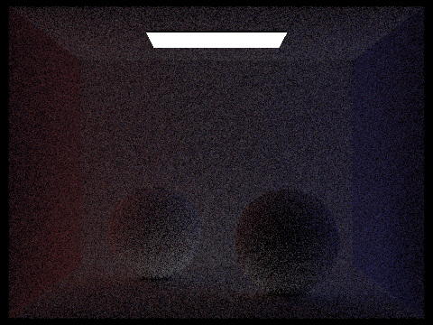 |
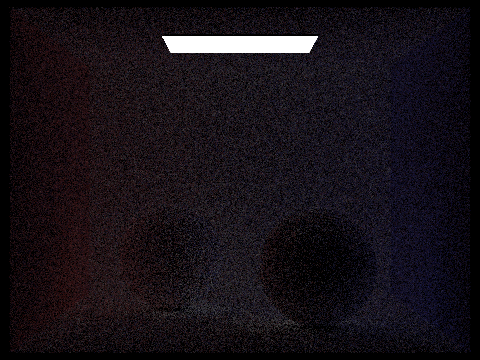 |
The 2nd bounce of light illuminates areas that are in shadow from direct lighting — most notably the underside of the bunny and the ceiling, which receives light reflected off the floor. The 3rd bounce further softens these areas and adds subtle color bleeding from the colored walls. Together these contribute significantly to the perceived realism of the image compared to rasterization, which typically only supports direct lighting without expensive additional passes.
Accumulated Bounces: CBspheres_lambertian.dae (isAccumBounces=true):

|

|

|

|

|

|
Russian Roulette: CBbunny.dae:

|

|

|

|

|

|
Sample Rate Comparison: CBbunny.dae (4 light rays):

|

|

|

|

|

|

|
Part 5: Adaptive Sampling
Disclaimer: We unfortunately ran out of time for rendering.
Algorithm
Adaptive sampling concentrates samples in pixels that are harder to converge, rather than using a fixed sample count everywhere. For each pixel, we track two running statistics as we accumulate samples:
\[ s_1 = \sum_{k=1}^{n} x_k, \qquad s_2 = \sum_{k=1}^{n} x_k^2 \]where \(x_k\) is the illuminance of the \(k\)-th sample, computed via radiance.illum(). From these we derive the mean and variance:
We then compute the 95% confidence interval half-width:
\[ I = 1.96 \cdot \frac{\sigma}{\sqrt{n}} \]A pixel is considered converged when \(I \leq \texttt{maxTolerance} \cdot \mu\). Sampling stops early for that pixel. If the pixel has zero mean (e.g. completely black pixels in shadow), we also stop early to avoid dividing by zero.
Implementation
The convergence check runs every samplesPerBatch samples rather than after every individual sample, reducing overhead. The outer do-while loop fires a batch of samplesPerBatch rays, accumulates their illuminance into \(s_1\) and \(s_2\), then checks the tolerance condition. If the pixel has converged or the total sample count has reached ns_aa, sampling stops. The actual sample count is written to sampleCountBuffer so the rate image can be generated.
Results
The following renders use 2048 max samples per pixel, 1 light ray, and 5 max ray depth. The rate image shows red for pixels that needed many samples (high variance — typically shadow boundaries and indirect light regions) and blue for pixels that converged quickly (uniform regions like flat walls).

|

|
|
|
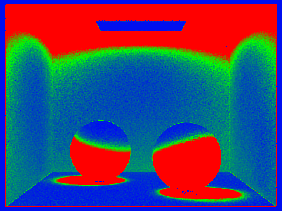 |